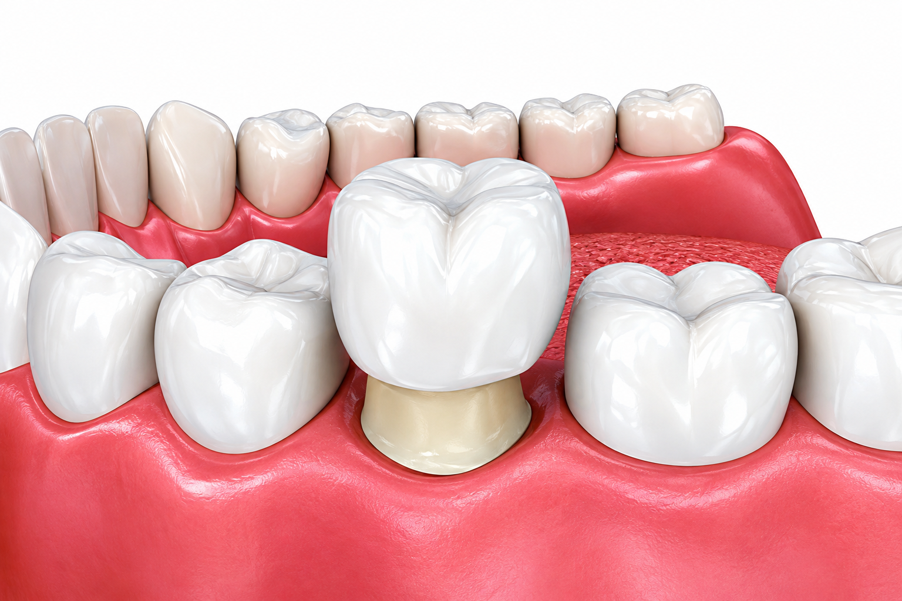
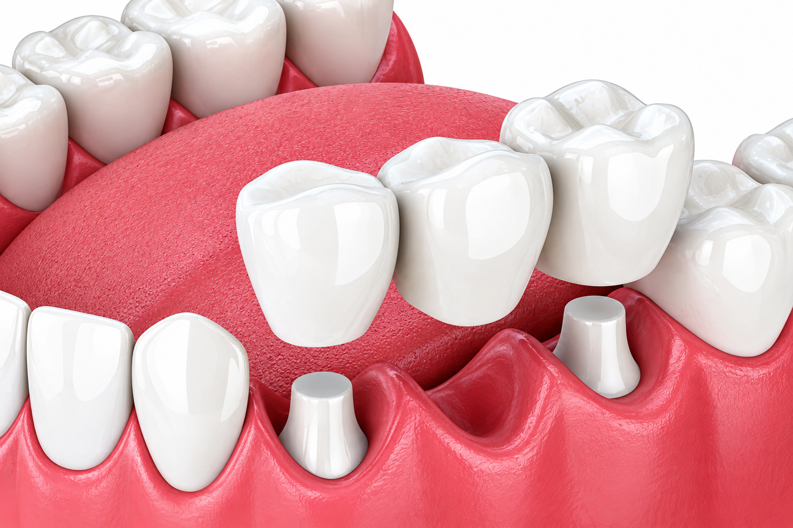
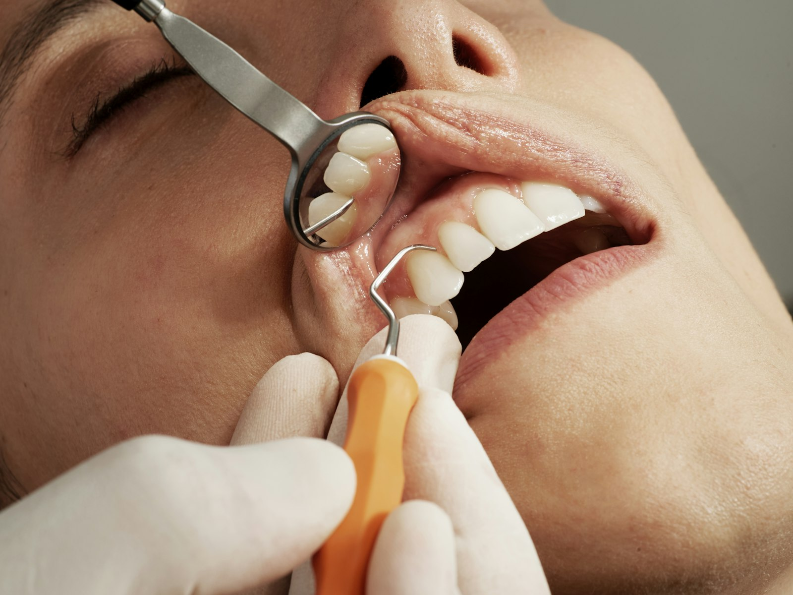

Dental crowns and bridges are trusted restorative solutions that rebuild and protect damaged teeth and replace missing ones — helping you restore comfort, confidence, and a healthy smile. Whether it's a weakened tooth that needs extra strength or a gap that affects your ability to eat, speak, or smile with confidence, our team designs restorations that work naturally and look great.
Call Clinic
Dental crowns are custom-made caps that fit over damaged or decayed teeth to restore their shape, size, strength, and appearance. They are typically used when a tooth is too weak or damaged for a filling, or after root canal treatment, to protect the remaining tooth structure. Crowns are designed to match the color of your natural teeth, so no one will know you have one.
At JMP Dental & Implant Centre, we offer various types of dental crowns so you can enjoy all the benefits of a beautiful, functional smile, including:

Dental bridges are an excellent option for restoring your smile and maintaining proper oral function after tooth loss. A dental bridge is a prosthetic tooth (or teeth) that literally bridges the gap left by missing teeth. The artificial tooth is held in place by crowns placed over the adjacent teeth on either side of the space.
Bridges can resolve minor to moderate tooth loss and prevent remaining teeth from shifting position — keeping your bite stable and your smile complete.
Discuss Your SmileBoth dental crowns and bridges typically involve two appointments and a careful, step-by-step process designed to ensure your restoration looks natural, feels comfortable, and functions properly.
Your dentist evaluates the tooth and gently reshapes it to make room for the crown. A mold or digital scan is taken, and your crown is either created in-office (often using 3D technology) or sent to a dental lab. You'll leave with a temporary crown to protect the tooth in the meantime.
At your follow-up visit, the temporary crown is removed and the tooth is cleaned. Your dentist places the permanent crown, checks the fit and bite, makes any needed adjustments, and secures it with dental cement.
A short time later, you may return for a follow-up visit to ensure everything feels comfortable and functions as it should.
Your dentist examines your mouth, takes X-rays, and assesses the health of nearby teeth and your bite. They evaluate the space where the tooth is missing and discuss your goals to determine whether a bridge is right for you.
The teeth on either side of the gap are prepared so they can support crowns. Impressions or digital scans are taken and used to create the bridge in a dental lab. A temporary bridge protects the area while your permanent one is made.
Once the bridge is ready, your dentist removes the temporary restoration and cements the permanent bridge into place. They check your bite and make adjustments to ensure it feels secure and natural.

It's normal to experience mild sensitivity at first, especially to hot or cold. This usually improves within a few weeks. To help protect your new restoration and stay comfortable, we recommend:
A bridge can fill a visible gap caused by missing teeth and help restore the appearance of your smile.
Replacing missing teeth can help support everyday chewing and eating.
A suitable restoration can help restore aspects of normal dental function following tooth loss.
Contact JMP Dental & Implant Centre to learn more about dental crowns, bridges, and other tooth replacement options.